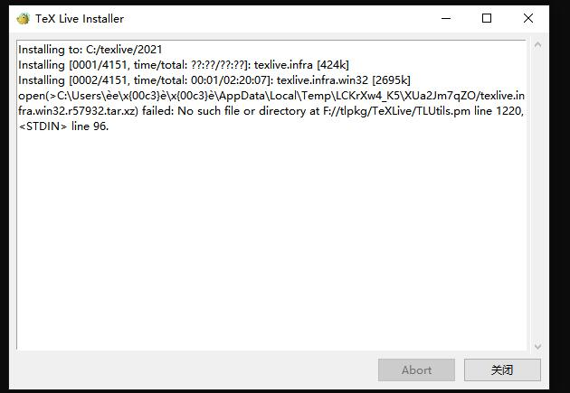

Windows 不合法的缓存路径导致 TeX Live 安装失败
在 Windows 上安装 TeX Live 时可能遇到由于缓存路径名称不合法, 即 不是纯英文的无空格的路径, 而安装错误的情况.
错误
在使用 GUI 界面安装时, 出现的错误形如下图

命令行安装时错误如下图

原因
这是因为 TeX Live 安装的时候需要使用环境变量 TEMP 与 TMP 来释放临时文件, 但是路径名不合法会导致调用失败.
解决方法
永久修改
TEMP与TMP环境变量的值. 知道了问题在哪就容易解决了, 首先右键此电脑→属性→高级系统设置→环境变量→用户环境变量找到TEMP与TMP, 如果没有刻意设置的话其值应该都为中文用户名便会导致1
%USERPROFILE%\AppData\Local\Temp
%USERPROFILE%中含有无法识别的中文字符, 我们可以修改这个路径改为合法路径, 如再启动安装程序即可安装成功.1
C:/Temp
临时修改
TEMP与TMP环境变量的值. 在cmd中执行即可临时修改这两个环境变量的值, 然后继续在1
2
3mkdir C:\temp
set TEMP=C:\temp
set TMP=C:\tempcmd中执行安装程序即可. 关闭cmd窗口时这两个环境变量将恢复为原始状态.
后续
但是中文用户名带来的问题不仅仅是安装 TeX Live 失败. 所以最好可以拥有一个英文无空格的用户名, 首先最推荐的就是重装系统, 重新设置用户名. 如果无法或不愿重装系统, 可以尝试修改用户名, 但是直接修改用户名可能会导致严重的后果, 操作之前要做好数据备份以及心理准备, 下面放上可供参考的修改方法及知乎上的问题：